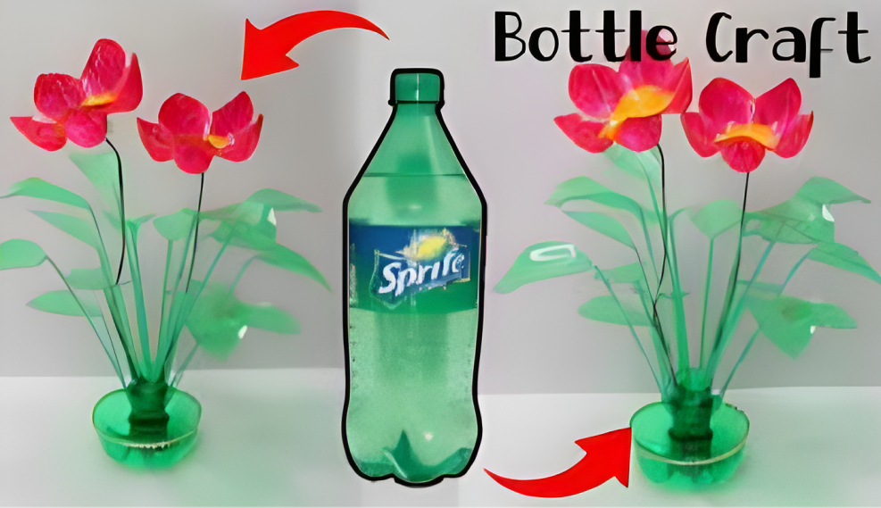

Cara Membuat Kerajinan Dari botol bekas

Bahan Yang Diperlukan
Botol plastik bekas secukupnya
Pewarna Atau cat Akrilik
Kuas
Gnting
Lampu Hias
Cara Membuat
- Langkah pertama, gunting bagian atas botol plastik yang telah disiapkan sebelumnya.
- Setelah itu, ambil botol plastik bagian atas tersebut. Lalu, potong menjadi 6 celah.
- Kemudian, lengkungkan setiap bagian botol plastik tersebut ke arah luas. Jika sudah semuanya, tekan
dengan menggunakan tangan agar semua bagian tersebut benar-benar menekuk ke luar.
- Selanjutnya, potong atau gunting setiap bagian atau celah botol plastik tersebut seperti sebuah klopak.
- Jika sudah, barulah diwarnai menggunakan cat akrilik dengan warna yang sesuai selera. Lalu, keringkan.
Lakukan langkah yang sama sampai menghasilkan beberapa bunga.
- Lubangi setiap tutup botol pada bunga dengan menggunakan pisau. Lalu ambil lampu hias yang telah
disiapkan
- Kemudian masukan setiap bunga yang telah dilubangi bagian bawahnya ke dalam setiap lampu hias. Selain
menggunakan lampu hias, sebenarnya juga bisa menggunakan tangkai dengan memanfaatkan lidi atau kawat,
lalu kamu bisa menyimpannya pada vas.